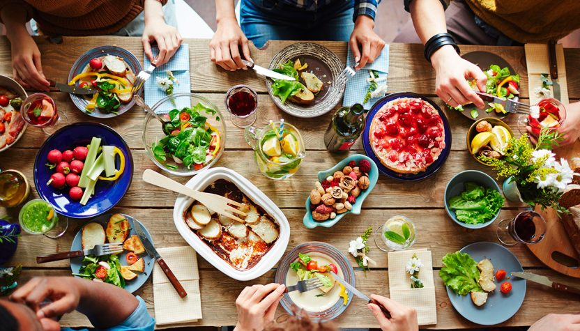

Quiénes somos
VEG Academy es un proyecto que surge por el deseo de la UVE (Unión Vegetariana Española) de promocionar y motivar el mundo VEGETARIANO y VEGANO y cuyo principal objetivo es ofrecer formación vegetariana de calidad.
Se nos planteaban muchas preguntas:
- ¿Cómo llegar a más gente?
- ¿Cómo ayudar a aquellas personas que empiezan en el mundo veg?
- ¿Cómo apoyar y respaldar a los vegetarianos?
- ¿Cómo explicar que una dieta vegetal esta llena de nutrientes, color y vida?
- ¿Cómo mostrar que hay muchas alternativas a los productos de origen animal?
- ¿Cómo transmitir el placer de cocinar para cuidarse y cuidar el planeta?
La UVE llega a la conclusión que necesita crecer, ampliar su radio de difusión. Dicen que la unión hace la fuerza, que cuantos más seamos más se nos oirá. Entonces nace VEG Academy, una red de colaboradores y profesionales con ganas de comunicar sus conocimientos y experiencias sobre el mundo VEG a través de sus talleres y cursos. Todos nuestros formadores son miembros de la UVE.
Desde VEG Academy te damos la bienvenida a nuestra web. Te animamos a conocernos, a preguntar, a participar en nuestros cursos y a dejarte llevar para dejarte sentir.